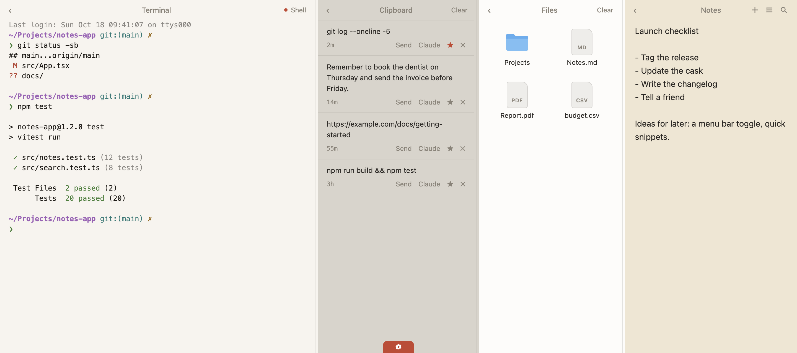

Perch
A pull-down shelf for the tools you already run.
brew install --cask yogeshvar/perch/perchmacOS 13 or later, Apple Silicon. Free and open source. View on GitHub

What’s in the shelf
Terminal
A real terminal running the CLI you already use: Claude Code, Codex, your shell or a custom command. Real PTY, your own login, nothing embedded.
Clipboard
History of text and images, with favourites. Send an item to the terminal or open it in Claude.
Files
A drop shelf. Drag files in to keep them close, drag them back out. References only, nothing is copied.
Notes
Quick markdown notes. Rename them, search them.
Panes collapse to slim rails and resize by dragging the dividers. Drag the shelf’s edge to change its height. Light and dark themes follow the system.
The pull
- Move the pointer to the top edge of the screen.
- Pull down with two fingers on the trackpad.
- The shelf slides open, with the terminal, clipboard, files and notes panes ready.
Prefer the keyboard? Press ⌘ ⇧ L. It works without any extra permission.
Private by design
- Everything stays on your Mac. Notes, clipboard history and settings live in
~/Library/Application Support/Perch(each note is also saved as a markdown file in itsnotesfolder). - No accounts and no analytics.
- No network calls from Perch itself. The terminal runs your own tools under your own login.
Install
brew install --cask yogeshvar/perch/perchThe cask lives in the tap yogeshvar/homebrew-perch. The source is on GitHub. Requires macOS 13 or later on Apple Silicon.
First launch
Perch is ad-hoc signed and not notarized, so macOS blocks the first launch. Open System Settings, go to Privacy & Security, and click Open Anyway (macOS 15 and later; on macOS 13 and 14, right-click the app and choose Open). Or clear the quarantine flag from a terminal:
xattr -dr com.apple.quarantine /Applications/Perch.appThe pull gesture needs macOS Accessibility permission. Grant it in System Settings, Privacy & Security, Accessibility. You may need to grant it again after an update. ⌘ ⇧ L works either way.
Questions
Is this Unclutter?
No. Perch is independent software and is not affiliated with Unclutter.
Does it embed Claude?
No. The terminal pane runs the CLI you install yourself, such as Claude Code or Codex, in a real PTY with your own login. Perch embeds nothing and is not affiliated with Anthropic or OpenAI.
Does it run on Intel Macs?
No. Perch is built for Apple Silicon.
Why does it ask for Accessibility?
Only for the two-finger pull at the top edge of the screen. Without the permission the gesture is off, but the ⌘ ⇧ L shortcut still works.
How do I quit, or hide the menu bar icon?
Both are in the menu bar icon’s menu and in the gear tab of the shelf. Settings also cover launch at login and the scroll gesture permission.